Objectives
In this Exercise you will learn how to:
- Create an asset instance dashboard to see how an individual asset is performing
- Create a summary dashboard that aggregates asset performance metrics across multiple assets of the same type
- Detect anomalies by applying anomaly detection functions
- Create alerts to prioritize anomalies
- Monitor alerts across multiple assets in a summary dashboard you create
- Troubleshoot to find the root cause of a problem
Before you begin:
This Exercise requires that you have completed the pre-requisites required for all Exercises
Watch the 10 min video explaining why anomalies matter to business. 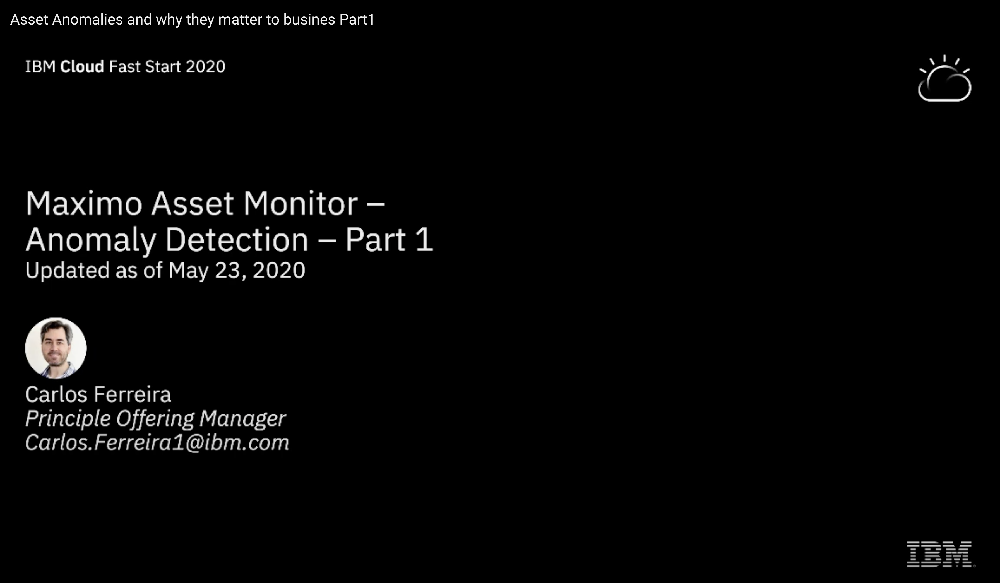
Create Simulated Robots to Monitor
In this exercise you quickly create some simulated robot operational data that you will use in your exercises in this Exercise. You will use data from simulated industry robots as the assets you are responsible to monitor.
- Click
Hometo see the top level tasks you can do with Monitor. 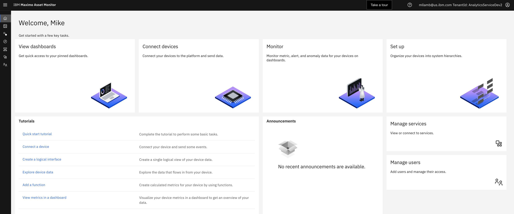 - Click
Set up - Click on
DevicesYou will create a simulated set of robot assets (entities) that represent an assembly line of manufacturing robots. - Click
+button. 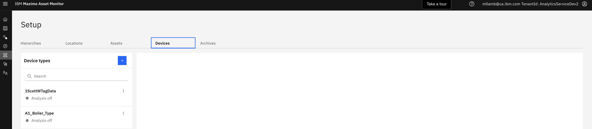 - Select on
Sample Robot Typeand click onNextbutton. 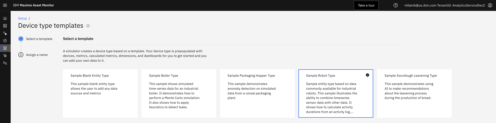 - Edit the Asset Type name prepending your own initials
Your_Initials_Robots_Type.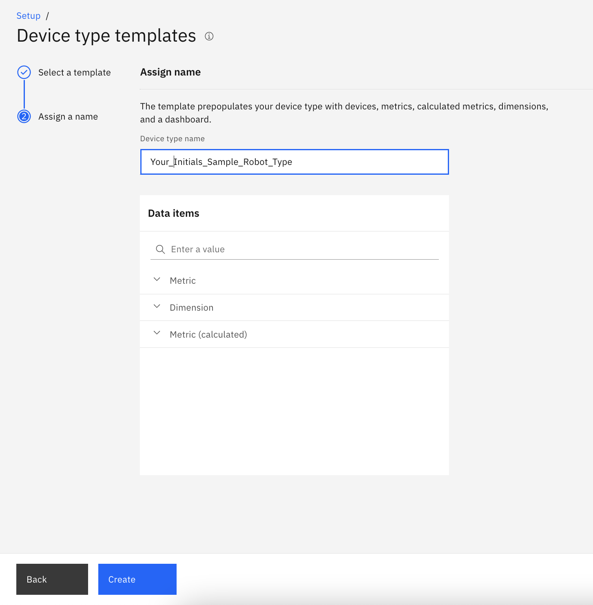 - Click
Createbutton. Monitor will create a set of robots you can monitor with simulated random data.
Explore Device Type Dashboard
An device dashboard displays the operational metrics for a single device, i.e. one specific industry robot. The data metrics of the robot are presented on the dashboard using cards.
- Click on
Monitorfrom the left nav - Click on
Devicesand search forYour_Initials - Click on your device type 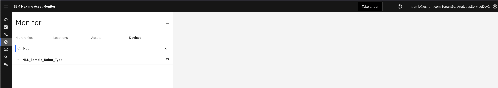
- On the
Datatab, expandMetricto see the metrics that Monitor has created for your Robots with simulated time series data. The outline shows the acc, load, speed and torque metrics in the data items outline. 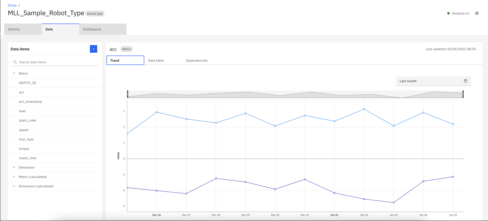 - Expand
Dimensionto see the classifications Monitor has created to filter and summarize all the Robots key performance metrics like byManufacturer. Dimensions are meta data for describing a device that can also be used to filter devices in tables or in functions. - Expand
Metric (calculated)to see the functions used to create the simulated data likework_performed. 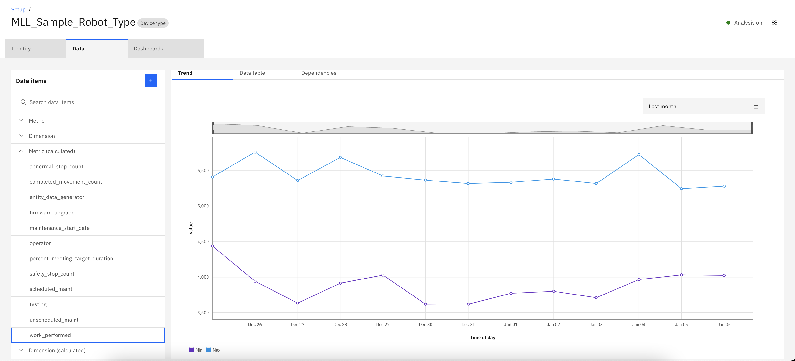 - Click on
Monitoron the left side. - Click on
Devicesand search forYour_Initialsto find the device type you created and click on it. - Robot device dashboards have been automatically created for you by Monitor. Click on device (Robot)
73000 - Click on
Asset Metrics Dashboard - Click one of the Robot asset dashboards that have been automatically created for you by Monitor. 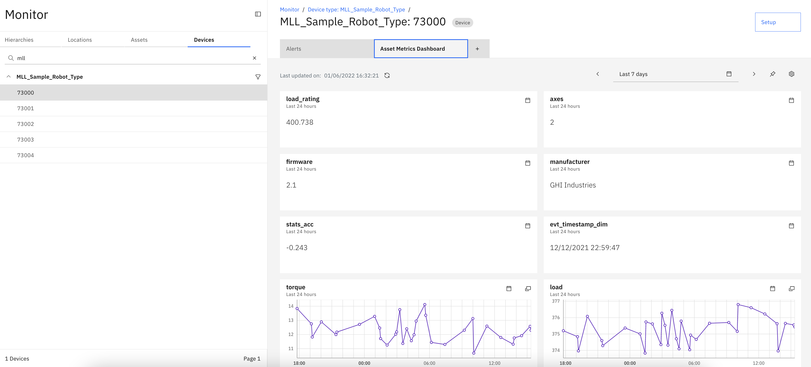
- In this exercise the Asset Dashboard for the Robots was automatically created for you. Take a moment to see what cards were created for you in the
Asset Metrics Dashboard. Note the different types of cards in your dashboard. Monitor provides multiple types of cards to choose from when configuring a dashboard.
Value Cards A value card shows a single or multiple entity metric value. A value may be attributed with a title, a label and a unit. The value may be given a precision and rules on threshold levels. A value card may be sized as a wide or tall card with big or small sized numbers.
Line Chart Cards A line chart card shows time-series data from a single or multiple entities as a chart with time and value axes. The chart may be given a title and labels on the axes. The line chart may be shown in full screen mode and is added a data table with the metrics values plotted in the chart. A line chart may also be overlaid with an Alert metric indicating any anomalies on the metric.
Table Cards A table card shows tabular data by columns. A table card is configured by referencing some data source for each column. The table may group data source values and present a count rather than each individual value. An Alerts Table is a preconfigured table presenting alert information. You will add one later for tabulating alerts.
Image cards An image card shows as a custom image with configured hotspots. Each hotspot is indicated at a position on the image with an icon and configured as a value card with entity metrics. The value card is shown when clicking on the hot spot. You will add one later for displaying an image of the robot.
Edit Asset Dashboard
In this exercise you will modify the layout of the individual robot asset dashboard. An asset dashboard is a configuration of cards, layout and the datasource metrics for a specific asset. You can export dashboard configuration to JSON. You can also reuse and import dashboard configuration files from others.
- Click the
gear iconto modify the layout of your robot asset dashboard. 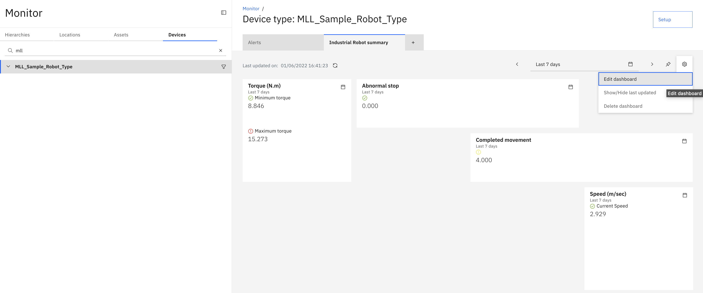 - Monitor provides a responsive user interface as the display size of the device or browser window changes you can reposition the cards. Change the card layout of your dashboard by dragging cards around with you mouse. 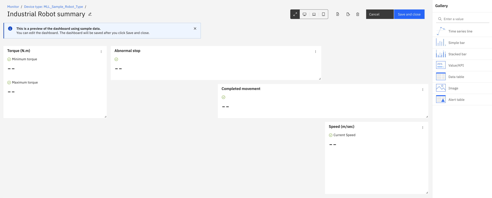
- Once you are satisfied with the card layout, change the width of the browser window to a smaller size. Note the
Dashboard Sizeof the layout has changed. Once again change the layout of your dashboard by dragging cards around with your mouse. The dashboard configuration saves all the adjustments you make to the layout for each resize of your browser window. - Click on
Exporticon. The dashboard configuration file in a json format is saved to your local downloads directory on your computer. - Click on
Save and closeto save the new dashboard layout.
Create a Summary Dashboard
In the previous exercise you modified an asset dashboard for each Robot. In this exercise you will create a Summary Dashboard. There is one summary dashboard presenting aggregated and filtered performance KPI across all robots of the type. A summary dashboard allows you to see the metrics for a filtered group of assets. "Show me all robots from a manufacturer and with a specific firmware.""
These filters are called dimensions in Monitor. Later in this Exercise you will learn how to assign dimensions to the entities. Our simulated robots already have the appropriate dimensions assigned to each robot. Robot 73000 may have a manufacturer GHI Industries and Robot 73002 may have a manufacturer Rentech. A summary dashboard allows you filter assets and then compute the data metrics aggregations for the applied filter. For example, the Max, Min and Mean torque of all robots for the filtered scope of a selected manufacturer.
A summary dashboard uses time grains when computing the aggregations. Monitor can display four types of summary dashboards. You can choose by hour, day, week, month time grains. A summary dashboard supports the same cards as an asset dashboard. The next steps show you how to create a daily summary dashboard for all your robots.
- From the side menu, click
Monitor - From the
Asset typestab, search for your Entity Type by typing the name in the search field. Select your entity type and click on it. - Click
+On theDashboardstab. - On the
Definitionpage, assign the namerobot_daily_summaryto the dashboard 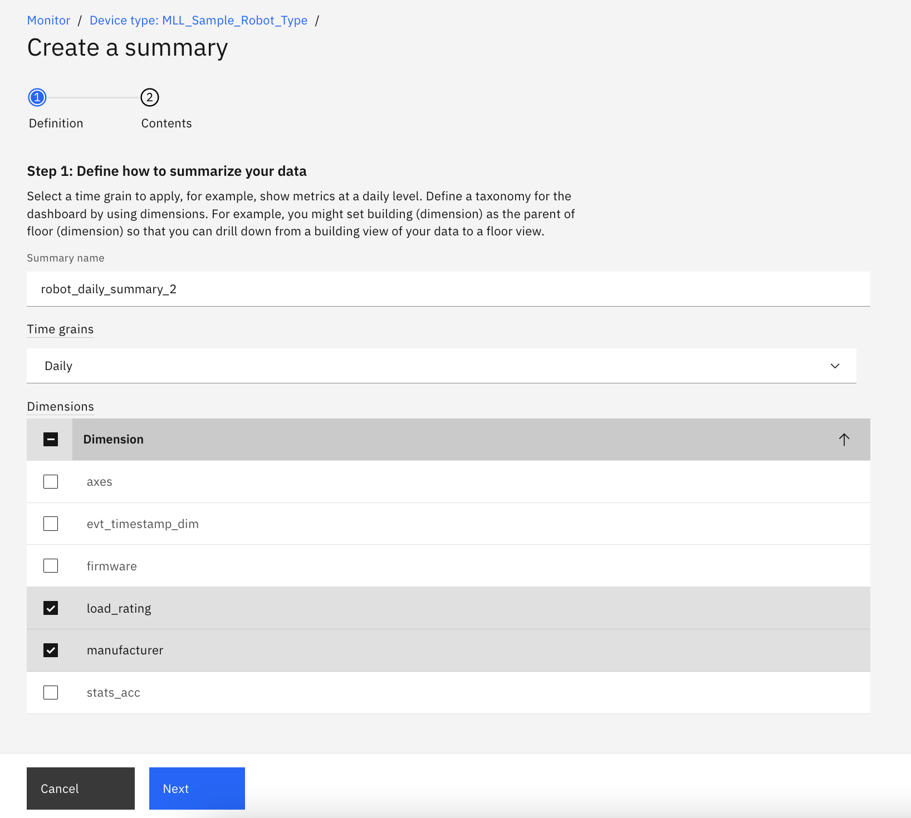 - Select the
Dailytime grain - Select
load_ratingandmanufacturer - Click
Nextand choose the max, min and mean for aggregation methods for all the number metrics. 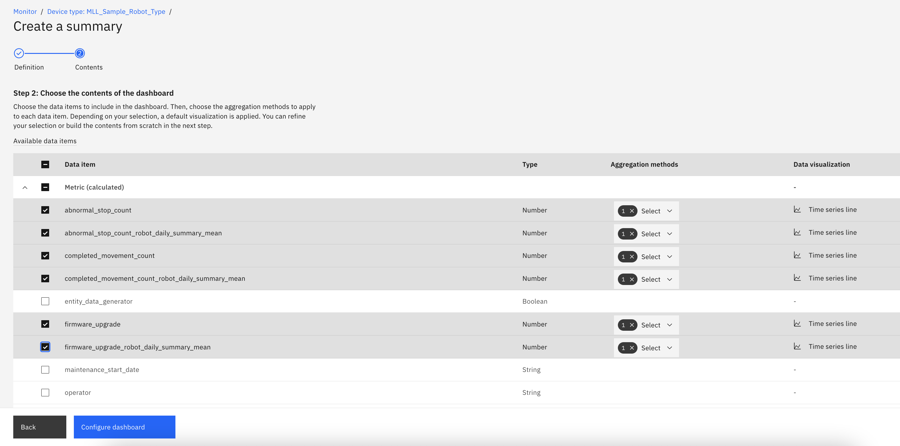 - Click
Configure dashboard - Export the dashboard to JSON that you will use later. 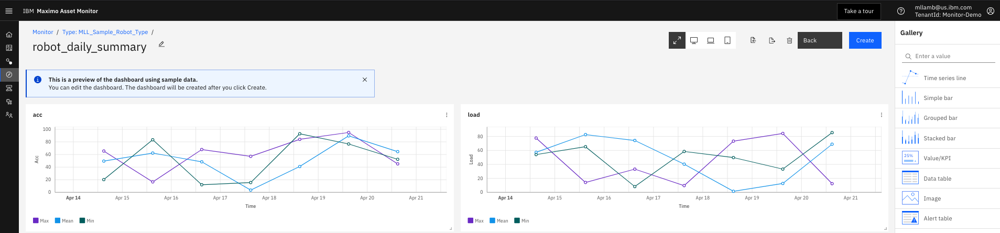
- Click
Create - Click on
robot_daily_summarytab and see that the dashboard is being created. - [Optional] repeat the steps above to create summary dashboards to create hourly, weekly and monthly aggregation performance metrics summaries of the all robots.
Add Metric Line Card
You need anomalies to be able to detect anomalies. Monitor provides simulated anomalies that you can apply to learn about anomaly detection. In this exercise you will:
- Add a simulated anomaly metric named
travel_time_anomaly. - Add a line card to display the
travel_time_anomalymetric on an asset dashboard.
The travel_time deviation that was generated earlier for your robot simulated data did not have anomalies in it. The AnomalyGeneratorExtremeValue function adds anomalies to the metric you choose. It abruptly increases or decreases the normal metric values for the metric you choose. In the steps below you will use this function to add a new calculated metric with anomalies named travel_time_anomaly You will add a line chart to display the anomalous data on your asset dashboard. Later you will use Maximo Asset Monitor anomaly detection functions to detect these anomalies. A SCADA system would likely not be able to detect these type of abrupt anomaly increase or decrease in metric values. SCADA systems typically only provide max or min business rule thresholds.
Add Simulated Anomaly Data for Travel Time
In this part of the exercise you will create simulated extreme anomalous values for travel time.
1. Click on Setup on the left hand side.
2. Search for Your_Initials and click on the asset type you created.
3. Click on 73000 from the table.
4. Click on Define dimensions in asset type
5. Click on Data tab. Click on +
Search the function catalog for AnomalyGeneratorExtremeValue to create extreme simulated anomaly data.
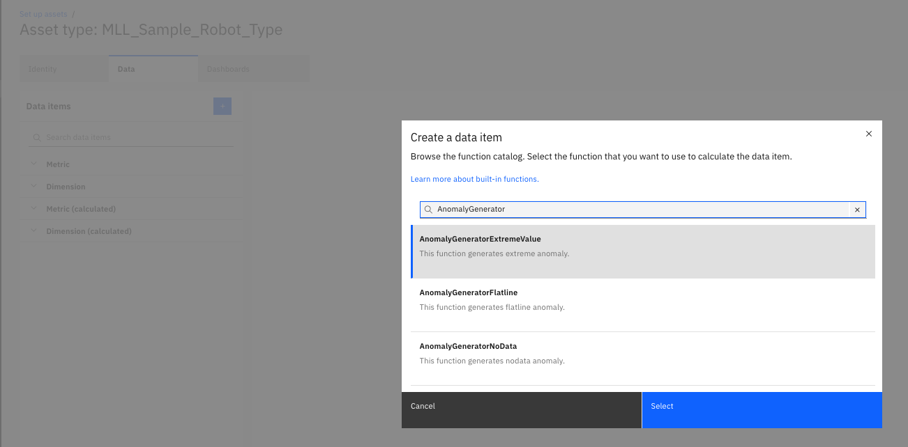
6. Click Select
7. Choose travel_time for the metric input_item. Extreme anomaly values will be added to this time series metric.
8. Set factor to a value of 100. This is how frequently an anomaly will occur. An anomaly will be generated after every 100 data points.
9. Set size to a value of 4. This is how extreme value will be. An anomaly will be 4 times the source travel_time metric.
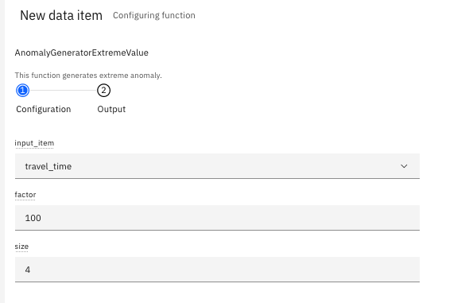
10. Click Next
11. Click Auto schedule on button to configure the functions schedule.
12. Set the output_metric to travel_time_anomaly.
13. Set the Calculating the last to 2 days to have Monitor generate 2 data of historical simulated anomalous data for travel_time_anomaly.
14. Click Create. After 15 minutes the function should be complete and the anomaly data will be available.
Add Simulated Anomaly Travel Time Line Card to Instance Dashboard using the UI widget
In this part of the exercise you will visualize the simulated travel_time_anomaly in a line card.
- From the side menu, click
Monitor - Search for
Your_Initialsand click on the asset type you created. - Click on
robot_daily_summarytab - Click on
gear icontop right. Choose Edit dashboards - Choose
Time series linefrom the right hand selection - Title: Travel Time with Anomaly
- Time range: Last 24 Hours
- Data item: travel_time_anomaly
- Click
Settingstab - Unit: sec
- Click
Add card - Save and Close
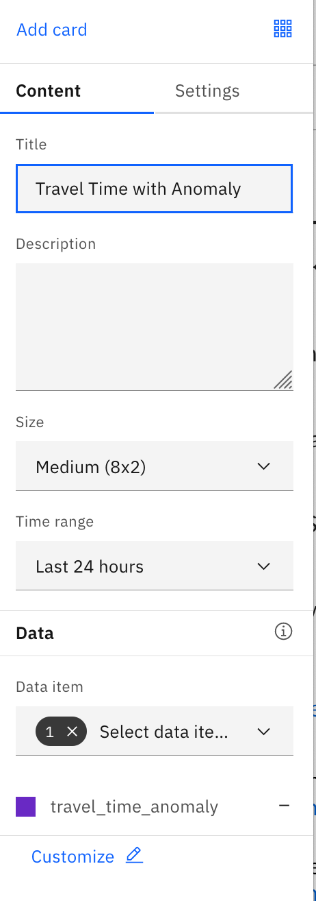 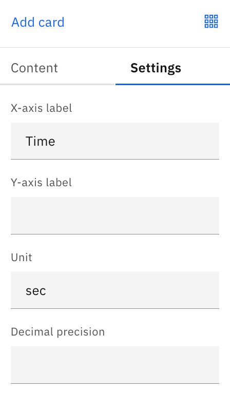
Add Simulated Anomaly Travel Time Line Card to Instance Dashboard using JSON
In this part of the exercise you will visualize the simulated travel_time_anomaly in a line card.
- Click on
Industrial Robot summarytab - Click on
Gearicon top right. ChooseEdit dashboards - Click on
Exporticon top right. Asset dashboard json file should be saved in your browser downloads directory with a name ofIndustrial Robot summary-dashboard.json - Open the exported instance dashboard JSON file using an Integrated Developer Environment like Atom or copy the file contents into an online Web JSON editor
- Read and learn about the JSON structure of Monitor dashboard template
- Study the JSON file cards in the editor. Insert the travel_time line chart card json below into the
"cards":[].{ "content": { "series": [ { "dataSourceId": "travel_time_anomaly", "label": "Travel Time" } ], "unit": "sec" }, "dataSource": { "attributes": [ { "attribute": "travel_time_anomaly", "id": "travel_time_anomaly" } ], "range": { "count": -24, "interval": "hour" }, "timeGrain": "day" }, "id": "travel_time_anomaly_line_card", "size": "LARGE", "title": "Travel Time with Anomaly", "type": "TIMESERIES" }, - Notice how the JSON nodes for
"content": {"series":and"content": {"dataSourceId":don't have an aggregation"aggregator": "min",like other line metrics in summary dashboard JSON. As a result thetravel_time_anomalymetric line chart data will display raw grain metric data. 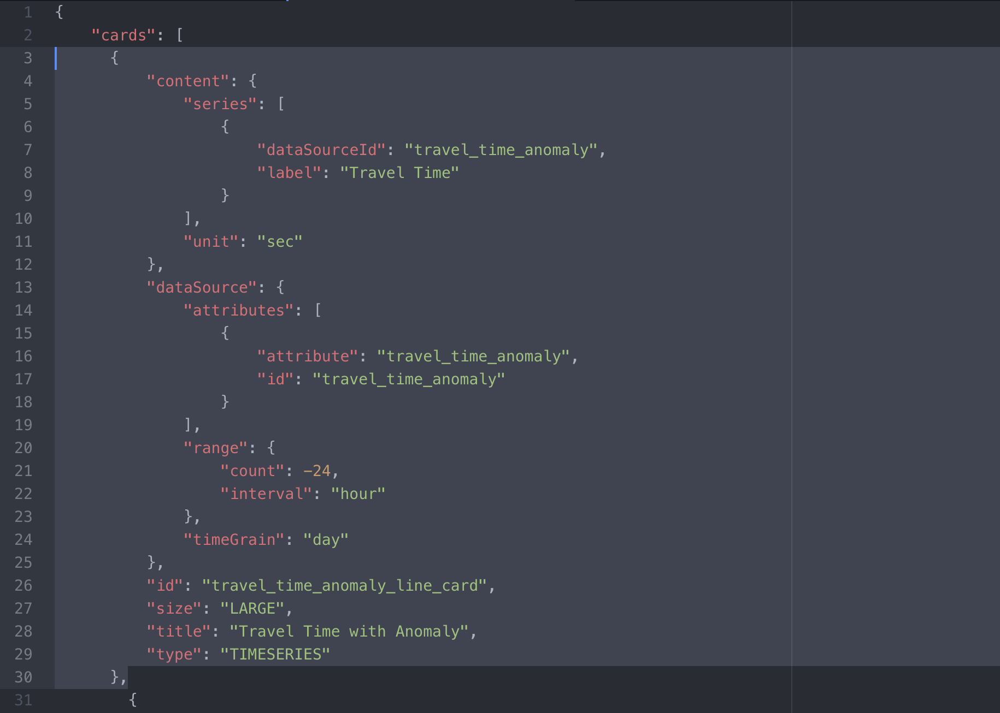 - Notice how the
"range": {"count": -24,"interval": "hour"}JSON node lets Monitor know to only display the last 24 hours of data. - Make sure to change all values with card sizes of
XLARGEtoLARGEandXSMALLWIDEtoSMALLWIDE, since these formats have been deprecated. - In the IDE, save your changes to the instance dashboard JSON file.
- You can see the finished Industrial_Robot_Instance_Travel_Time.json
- Return to the Monitor dashboard editor and click on the
Importicon. - Choose the
fileyou updated with the line card clickopento import your updated JSON file. - Your asset dashboard should now look similar to the one below and have a
travel_time_anomalyCard with some extreme anomalies like the one in the red rectangle. 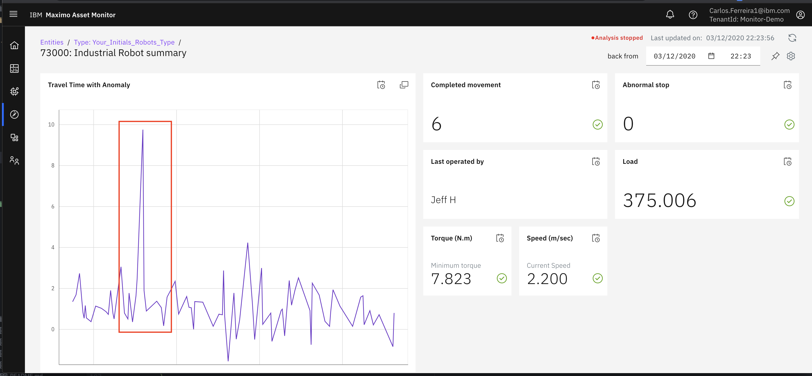.
Add Anomaly Detection
Maximo Asset Monitor includes models to detect anomalies in the function catalog. The anomaly detection functions can detect many types of anomaly patterns. These include:
- Varying signal becomes flat line which can be caused by a defective or tampered with sensor.
- Varying signal becomes a near vertical line which can be caused by a defective sensor or extreme changes to the system.
- Sudden peak maximum or minimum which can be caused by operating equipment outside normal operating procedures.
- Flat line becomes a varying signal which can be a system that has been running smoothly and then becomes out of tolerance or unstable.
- No sensor data is available which can be caused by a defective sensor or network connectivity issues.
- A predicted value doesn't come within the threshold based on correlated dependent target variables values.
In this exercise you will:
- Choose an asset to analyze.
- Choose a metric to analyze.
- Add anomaly functions to your Robot Asset Type to score how likely an anomaly is occurring.
- Add a line chart to visually compare if high anomaly model scores correlate with the robot
travel_time_anomalymetric on each robot asset dashboard. - Add anomaly alert functions with score thresholds that corresponds to a level that indicates an anomaly for a robot metric.
- Update a function with a new metric name or configuration values if needed.
- Add alerts to a line chart to visually see where anomalies are occurring on the
travel_time_anomalymetric.
Before you begin:
Watch the 14 min video explaining what anomaly detection functions are available in Maximo Asset Monitor and what anomaly patterns are detected. 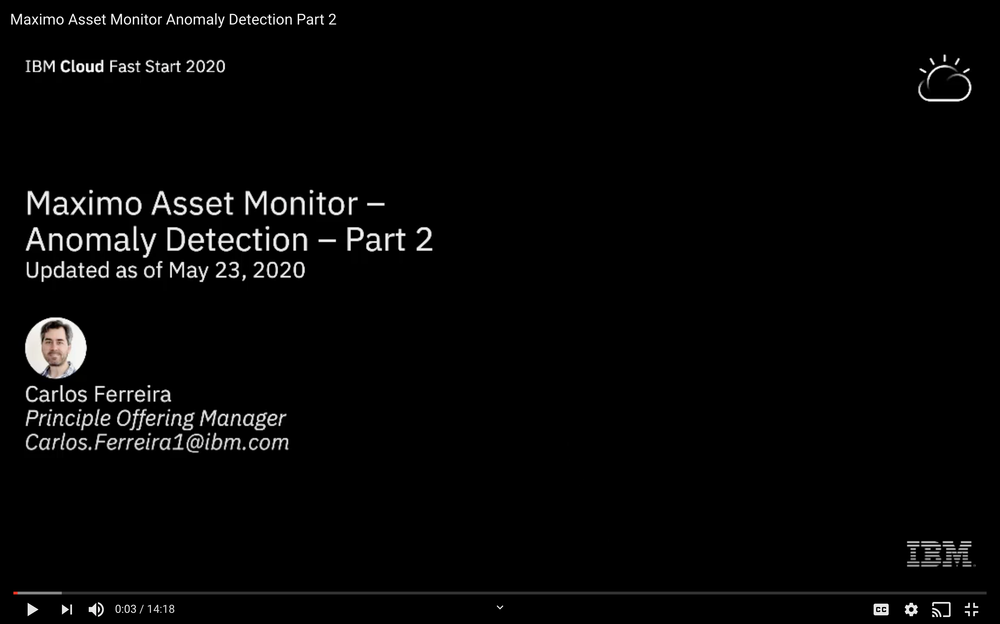
Watch the 19 min video explaining how to configure anomaly detection functions, alerts and dashboards. 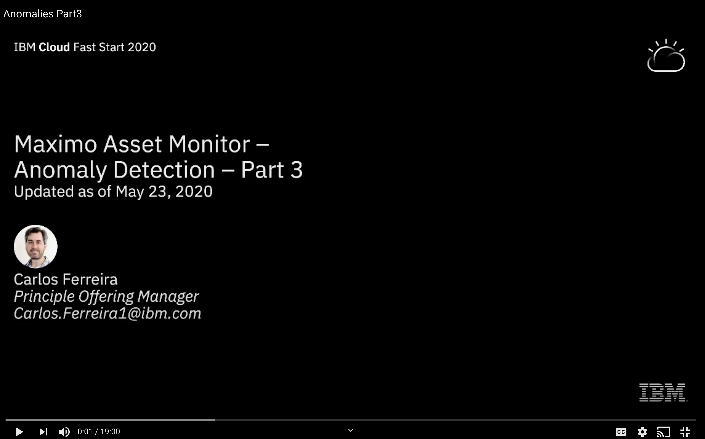
Imagine you are managing a fleet of delivery vehicles. One out of the five vehicles is a car instead of a scooter. If you wanted to detect anomalies for excessive miles per gallon performance you should analyze the miles per gallon metric for the car separately from the scooters. Add an EntityFilter function to isolate a function analysis to an individual asset.
- While editing your entity type, search the function catalog for
EntityFilterfunction. - On the
Datatab, click the '+' button and search in the function catalog forEntityFilter. 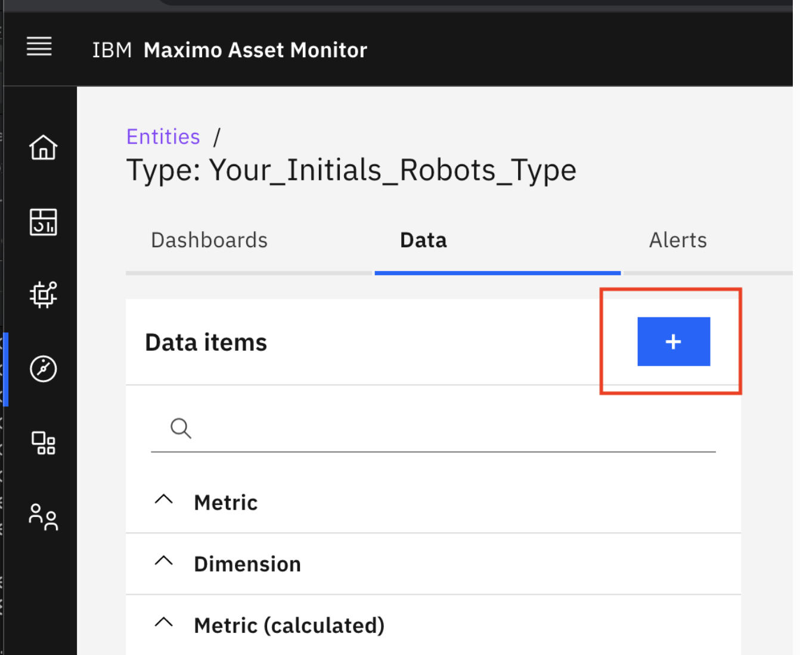 - Click
Next - Enter the list of entity ids separated by a comma or
73000for just one entity. 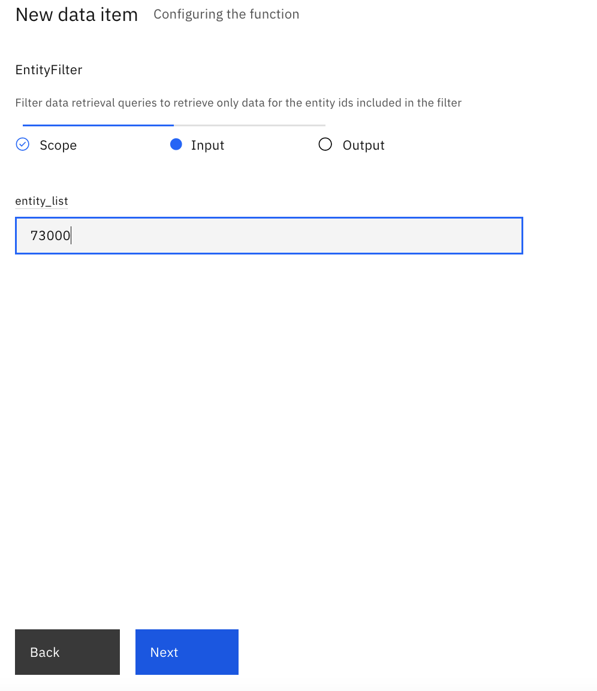 - On the function
Outputtab, enter the name of they filtered entityentity_73000for the output metric name. 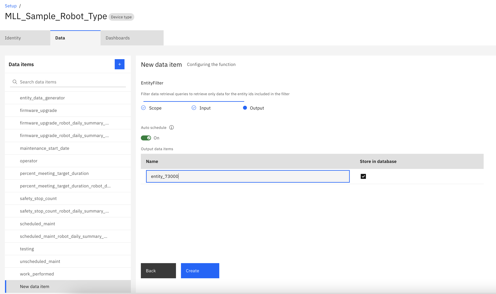 - Click
Create
Choose a Metric to Analyze
Add the Filter function you can isolate your analysis to an individual entity and metric. Select the metrics to analyze from the filtered entities by adding Filter.
- While editing your entity type, search the function catalog for
Filterfunction. - On the
Datatab, click the '+' button and search in the function catalog forFilter. 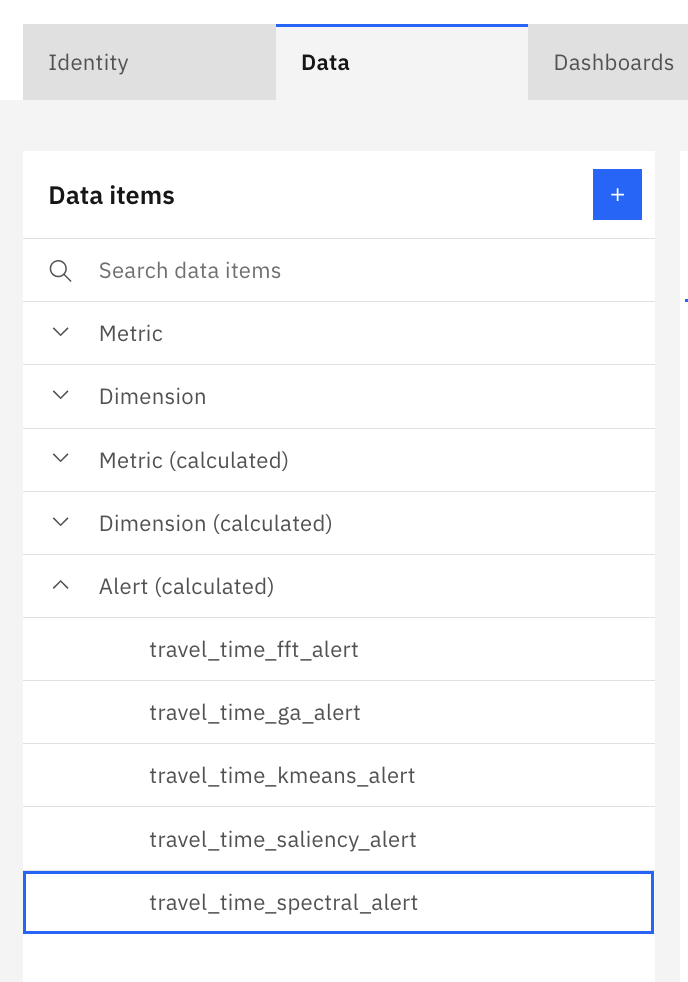 - Click
Next - Choose
entity_73000input item from the previous function as source shown below. - On the function
Configurationtab, choose${entity_73000} == Trueas the expression. 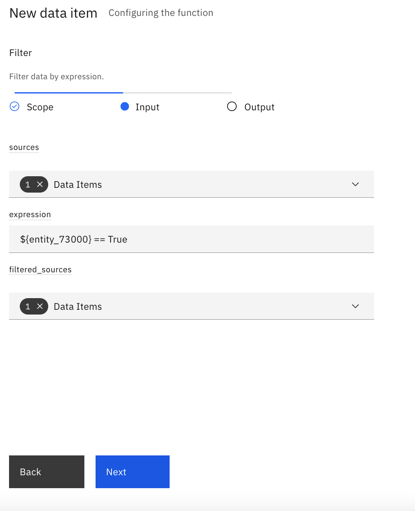 - On the function
Configurationtab, choosetravel_time_anomalyas the metric to analyzed forfiltered_sources. - Click
Next - On the function
Outputtab, enter the name of they filtered entitytravel_time_anomaly_entity_73000for the output metric name.
Add Anomaly Functions
You will add an anomaly function that will provide a score of how likely the single input metric is having anomalies during the specified window. The directions that follow will use the metric travel_time_anomaly which will analyze all robots for that metric. If you only want to analyze one robot entity 73000, then select entity filtered metric created in the previous step travel_time_anomaly_entity_73000 instead.
- Search the function catalog for anomaly detection functions to detect anomalies for the metric
travel_time_anomaly. - On the
Datatab, click the '+' button and search in the function catalog forAnomaly. - Select
K-MeansAnomalyScore. Notice the different kinds of Anomaly Model functions included with Monitor. ClickSelectbutton. 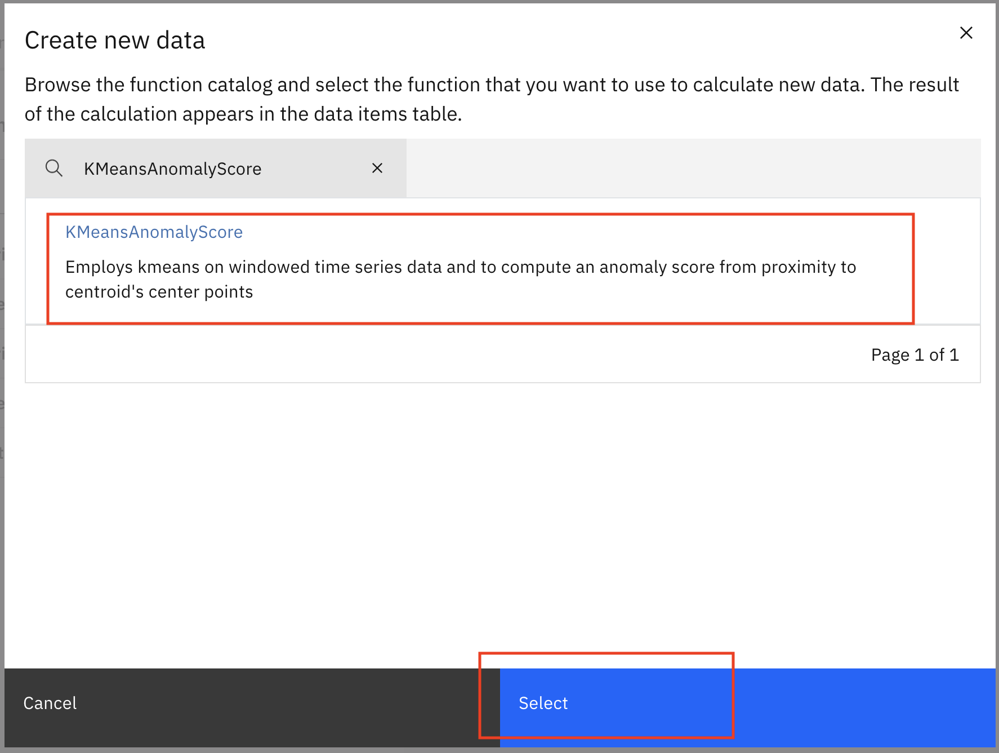 - Select the metric to score for anomalies
travel_time_anomaly - Anomaly detection functions require a window size which is the number of samples points to evaluate each time the model is scheduled to execute. Enter a
windowsizeof12. - Name the calculated metric
travel_time_kmeans_score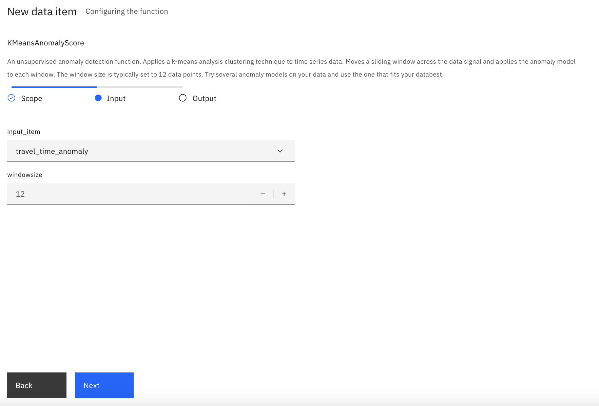 - Click
Nextto configure schedule, look back period and name the alert. - Click
Auto scheduleon button to configure anomaly function scoring schedule. 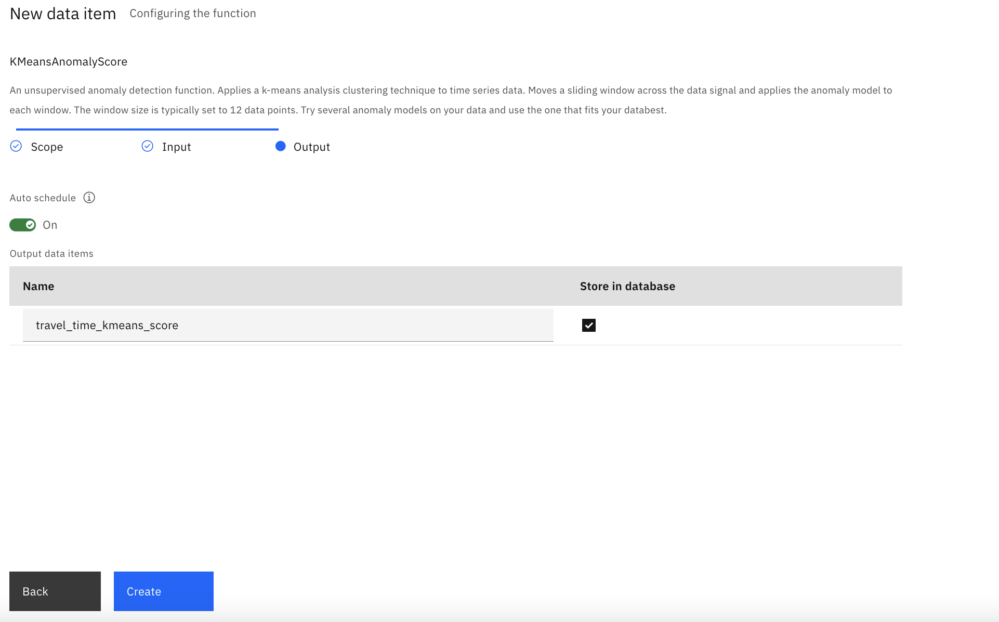 - Set the anomaly function to execute every
15minutes. The function will look for new data fortravel_time_anomalythat have been added in the last 15 minutes and calculate alerts for those new data items in thewindowsize. 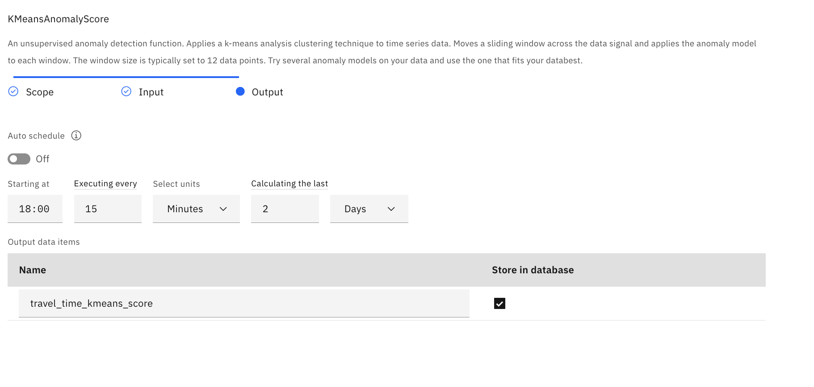 - Set the look back period to
2days. This will calculate historical scores looking back 2 days using the new configuration values with the historical metric values fortravel_time_anomaly. - Set the output metric name for the alert
travel_time_kmeans_score - Click
Createto create the calculated metric. It will take 15 minutes for the calculated metric to update. While waiting lets create anomaly functions for the other anomaly detection functions. See the guidance in the table below for scheduling anomaly functions. - Repeat the above steps in this exercise adding, configuring and naming the anomaly scoring models in a similar way for the other models. Use the tool tip suggestions for setting the input arguments default values:
- Search for
FFTbasedGeneralizedAnomalyScore2in the function catalog. Configure and name ittravel_time_fft_score - Search for
GeneralizedAnomalyScorein the function catalog. Configure and name ittravel_time_ga_score - Search for
SaliencybasedGeneralizedAnomalyScorein the function catalog. Configure and name ittravel_time_saliency_score - Search for
SpectralAnomalyScorein the function catalog. Configure and name ittravel_time_spectral_score
Table - Suggested Scoring Schedule
| Data Grain Frequency | Sample Window | Data Required | Schedule Scoring |
|---|---|---|---|
| 1 Day | 12 | 24 Days | Noncritical – Once per 12 days Critical - Once per day |
| 1 Hour | 12 | 24 Hours | Noncritical – Once per 12 days Critical - Once per 1 hour |
| 5 Minutes | 12 | 2 Hours | Noncritical – Once per 60 mins Critical - Once per 5 mins |
| 1 Minute | 12 | 1 Hour | Noncritical – Once per 12 mins Critical - Once per 5 mins |
Add a Multi Series Line Chart using the UI widget
- From the side menu, click
Monitor - Search for
Your_Initialsand click on the asset type you created. - Click on
robot_daily_summarytab - Click on
gear icontop right. Choose Edit dashboards - Click on
Time series line - Title: Anomaly Scores for Travel Time
- Time range:
Last 24 hours - Choose the following calculated metrics: travel_time_spectral_score,
travel_time_saliency_score, travel_time_kmeans_score, travel_time_ga_score, travel_time_fft_score, travel_time_anomaly - Click on Settings
- X-axis-label: Time Y-axis-label: Score
- Click
Add card - Save and Close
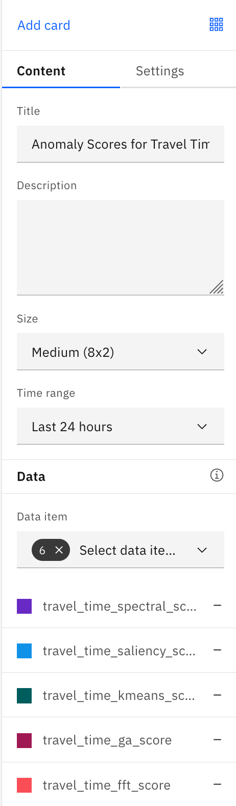 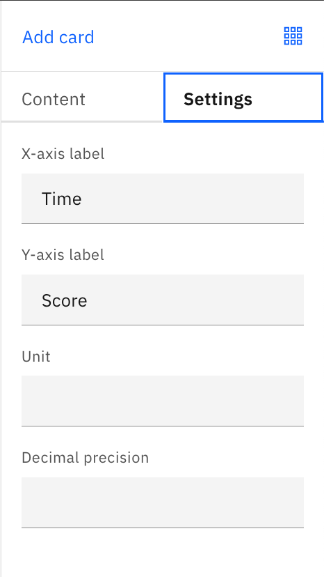 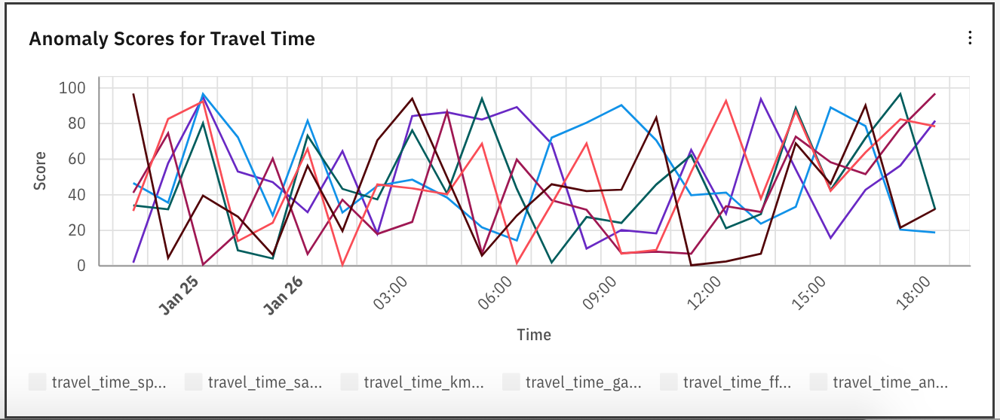
Add a Multi Series Line Chart using JSON
Add a line chart** to visually compare if high anomaly model scores correlate with the robot travel_time_anomaly metric on each robot instance dashboard. In this exercise you will add a multi series line chart card to your instance dashboard that plots the anomaly model scores for time_travel_anomaly metric. You can then visually correlate which models are effective at detecting anomalies by seeing which model scores are high when the anomalies happen.
- From the asset dashboard click on the
gear icon - Select
Edit dashboard -
Add the following line chart card Json for
travel_time_anomalymetric anomaly function scores to your asset dashboard.{ "id": "card-anomaly-scores-line-timeseries", "dataSource": { "attributes": [ { "attribute": "travel_time_anomaly", "id": "travel_time_anomaly" }, { "attribute": "travel_time_spectral_score", "id": "travel_time_spectral_score" }, { "attribute": "travel_time_saliency_score", "id": "travel_time_saliency_score" }, { "attribute": "travel_time_ga_score", "id": "travel_time_ga_score" }, { "attribute": "travel_time_fft_score", "id": "travel_time_fft_score" }, { "attribute": "travel_time_kmeans_score", "id": "travel_time_kmeans_score" } ], "range": { "count": -24, "interval": "hour" } }, "content": { "series": [ { "dataSourceId": "travel_time_anomaly", "label": "Travel Time Deviation " },{ "dataSourceId": "travel_time_spectral_score", "label": "Spectral" }, { "dataSourceId": "travel_time_saliency_score", "label": "Saliency" }, { "dataSourceId": "travel_time_ga_score", "label": "Generalized" }, { "dataSourceId": "travel_time_fft_score", "label": "FFT" }, { "dataSourceId": "travel_time_kmeans_score", "label": "Kmeans" } ], "xLabel": "Time", "yLabel": "Score" }, "size": "MEDIUM", "title": "Anomaly Scores for Travel Time", "type": "TIMESERIES" },
4. View the the anomaly model scores fortime_travel_anomalymetric line chart card on each robot asset dashboard. Analyze the anomaly high scores for each model to see which ones happen when the anomaly does fortime_travel_anomalyhappens. It should look something like the card below 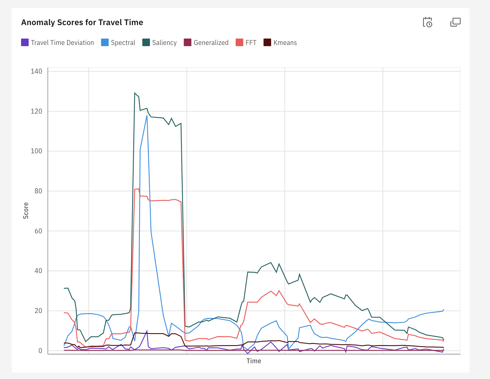 5. In the line chart clickSpectrallabel so that you can see only the line chart of each score versustime_travel_anomalymetric value. 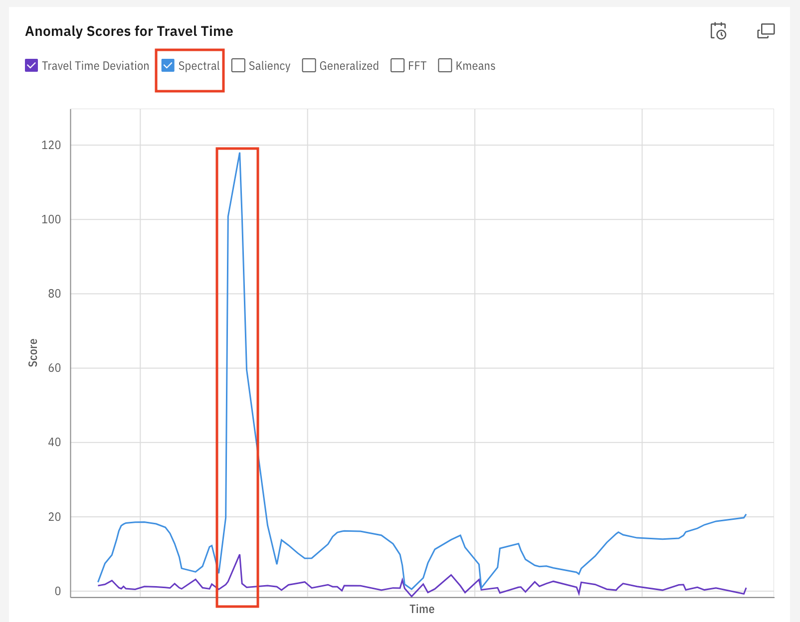 6. Click onSpectrallabel again to hide that line. Select theSaliencylabel to see anomaly score line. Notice how the models score higher when there is an anomaly.
7. Study each instance dashboard to see where the anomaly scores are high andtime_travel_anomalymetric appears to have an anomaly. Make note of the score levels that correlate with your Robots anomalies that were generated in thetravel_time_anomalymetric. You will use this in the next exercise when you create alerts to notify you that anomalies have occurred. The table below has some suggested starting values:
| Anomaly Score | Upper Threshold |
|---|---|
travel_time_spectral_score |
99 |
travel_time_saliency_score |
105 |
travel_time_ga_score |
0.4 |
travel_time_fft_score |
104 |
travel_time_kmeans_score |
8 |
Add Anomaly Alerts
In this exercise you will create alerts for each anomaly function score identified in the previous exercise. You will set the alert thresholds to values of the visually correlated anomaly scores using the upper_threshold values from the table in Add Anomaly Functions As you learned earlier, alerts are a function in the Maximo Asset Monitor catalog that can be configured to notify you that certain asset conditions require attention. There are a several alert functions included in the catalog like Alert High, Alert Low and Alert Expression Filter. Like other functions in the catalog, these alerts can be scheduled to run every five minutes or less frequently. Add a Alert High Value alert for each anomaly model. Alerts can calculate historical values for a given function configuration.
- Click
+button access the Function Catalog. - Search on
Alert - Select the
Alert High Valuefunction and then clickSelectbutton. 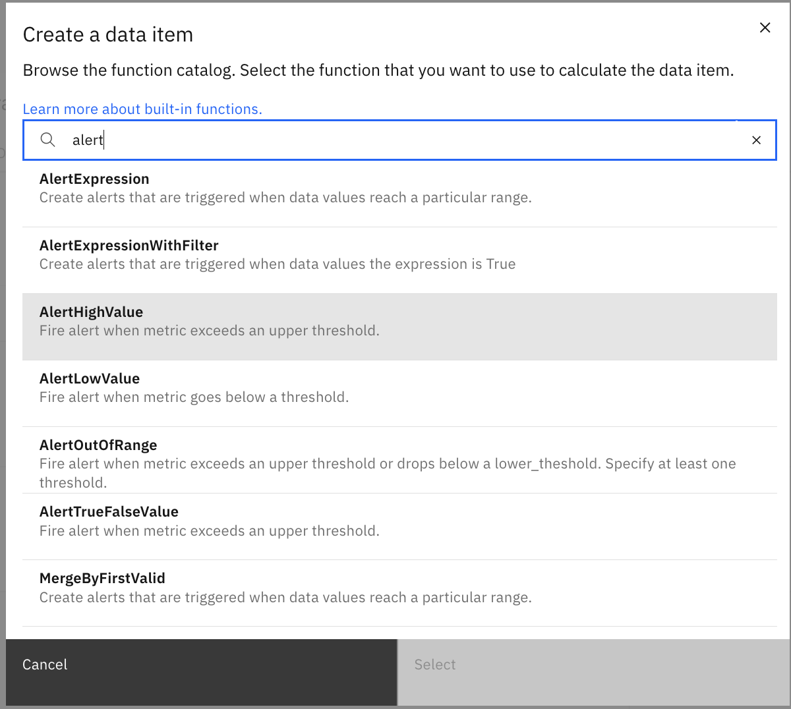 - Configure the alert to trigger when the value
travel_time_spectral_scorereaches99. An operator would be required to investigate each anomaly alert when they occur. It is important to avoid setting the alertupper_thresholdvalue too high which could cause anomalies to go undetected. Vice versa avoid setting the alertupper_thresholdvalue too low which could cause false alerts. False alerts are those alerts that triggered when there isn't an anomaly. 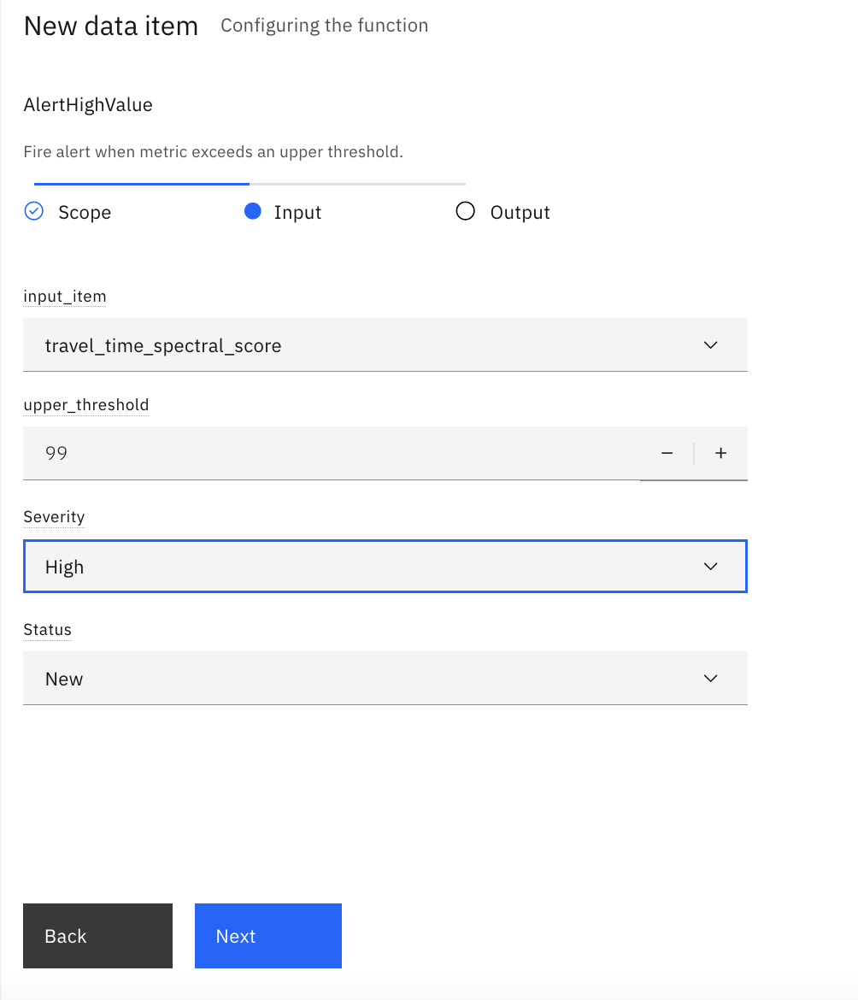 - Set
input_itemtotravel_time_spectral_score. - Set
upper_thresholdvalue to99. - Set
Severityvalue toHigh. You can add optionally add separate alerts forMediumandLowthresholds. - Set
Statusvalue toNew. Alerts don't have any order. They can start or finish an in any order. Users can then transition them toNewValidated,Acknowlegedand finallyResolved. Monitor does not provide a way to force specific state transition paths for alerts. - Click
Nextto configure schedule, look back period and name the alert. - Click
Auto schedulebutton to configure schedule. 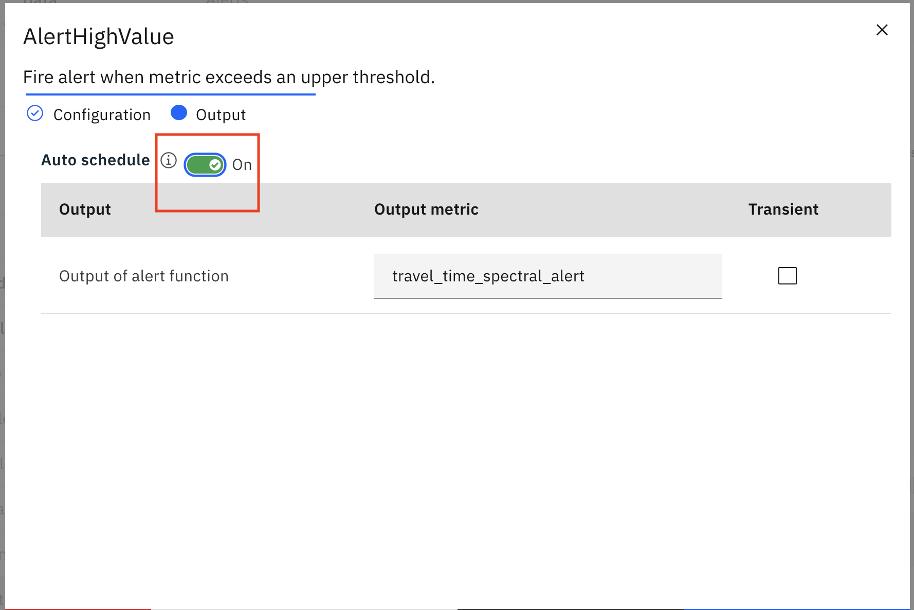 - Set the alert to execute every
15minutes. The alert will look for new data fortravel_time_spectral_scorethat have been added in the last 15 minutes and calculate alerts for those new data items.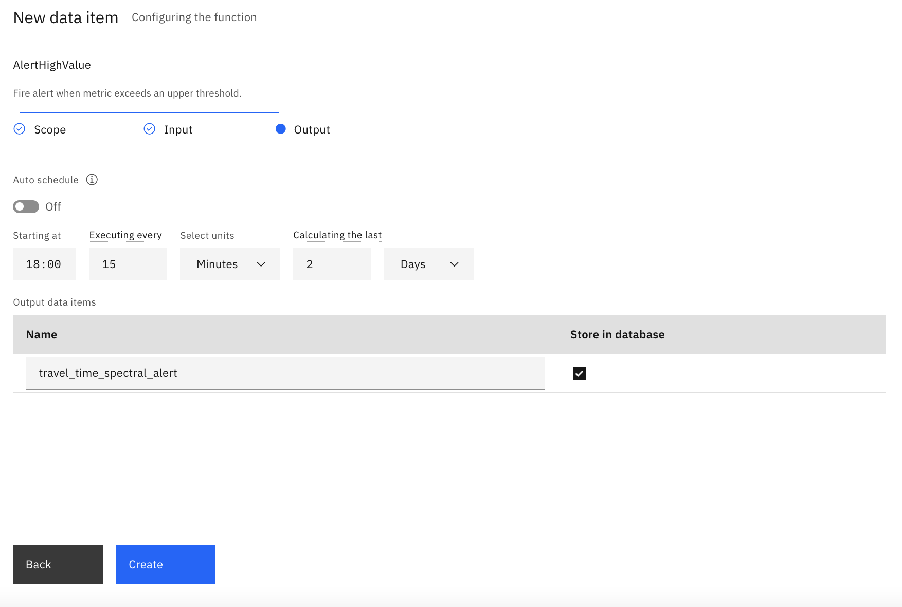 - Leave the look back period set to
1days. This will calculate alerts looking back 2 days using the historical values fortravel_time_spectral_score. - Set the output metric name for the alert
travel_time_spectral_alert - Click
Createto create the alert configuration. It will take 15 minutes for the alert to update. While waiting lets create the alerts for the other anomaly model scores. - Repeat the above steps in this exercise adding, configuring and naming alerts for each anomaly scoring model using the expression and alert names below.
| Search Catalog for Model | Upper Threshold | Output Metric Alert Name |
|---|---|---|
| SpectralAnomalyScore2 | 99 | travel_time_spectral_alert |
| SaliencybasedGeneralizedAnomalyScore | 105 | travel_time_saliency_alert |
| GeneralizedAnomalyScore | 0.4 | travel_time_ga_alert |
| FFTbasedGeneralizedAnomalyScore2 | 104 | travel_time_fft_alert |
| KMeansAnomalyScore | 8 | travel_time_kmeans_alert |
Update Functions
You can update functions with new a new metric name or configuration value. In this exercise you will review and correct any function names that are improperly spelt.
- Go to your entity type and click on the
Datatab. - Expand the
Alert (calculated)section of theData Itemsto see the alerts. They should look something like the figure below. 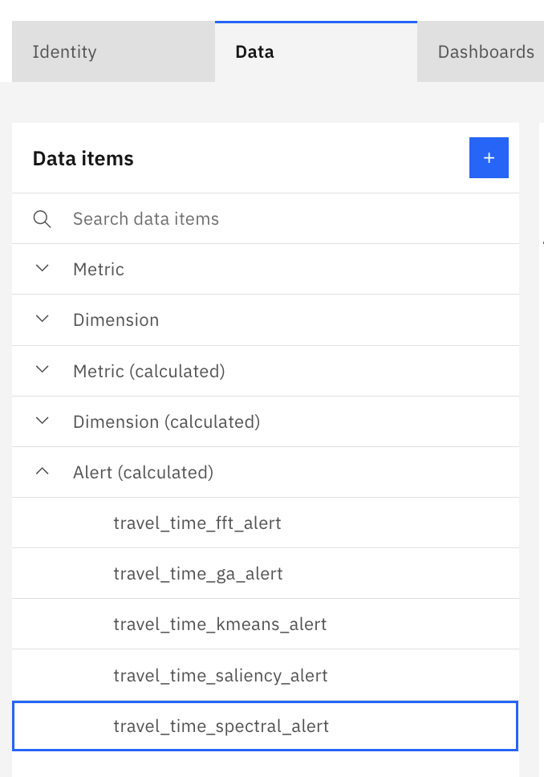 - Check the naming of each alert. If they are misnamed, click on the alert name in
Data Itemscolumn. - On the frame that opens, click the
Configure. On the dialog that opens andNextbuttons. Change theOutput metricname to the correct spelling.
Add Alerts to Line Chart
In this exercises you will add the travel_time_anomaly alerts to the line card for the travel_time_anomaly on the robots instance dashboard. Start by exporting the robots instance dashboard JSON and adding the alerts additionalData JSON below to the travel_time_anomaly metric line chart so that you can see red dots in the areas where there likely is an anomaly.
- Edit the robot instance dashboard template JSON.
- Export and modify the JSON adding the highlighted JSON below in an IDE to the
travel_time_anomalycard that you added earlier.
,
"additionalData": {
"type": "alert",
"dataFilter": {
"name": [
"travel_time_spectral_alert",
"travel_time_saliency_alert",
"travel_time_ga_alert",
"travel_time_fft_alert",
"travel_time_kmeans_alert"
]
}
},
- The highlighted gray JSON below shows where you should insert the json above. 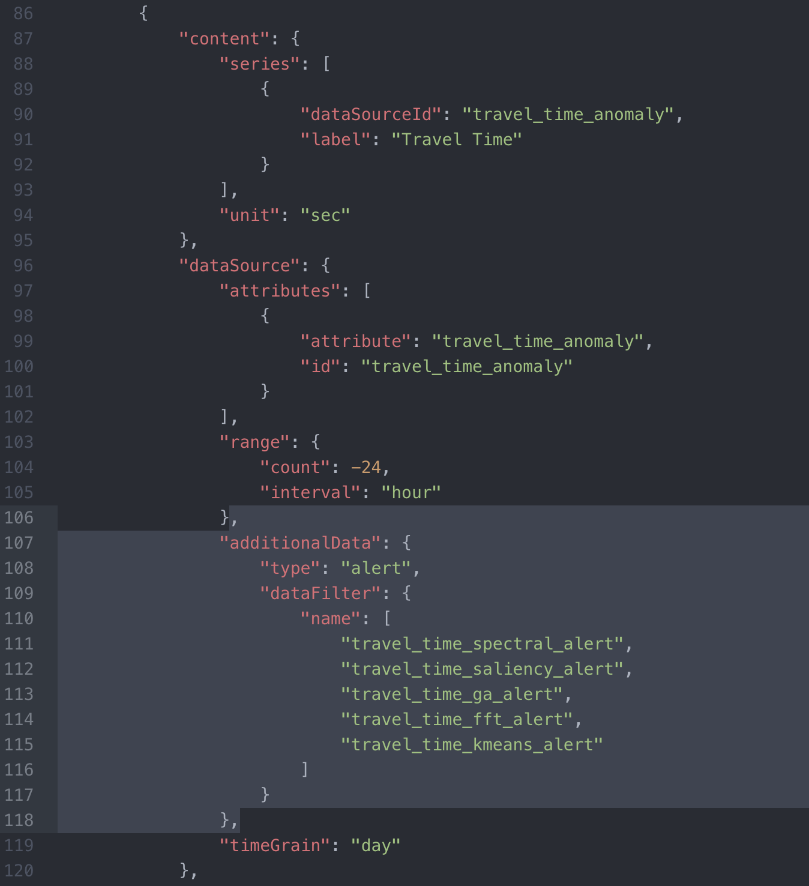 Save the JSON file in the IDE.
- Import the saved JSON file into the Monitor Instance Dashboard.
- Save the dashboard.
- View multiple robot instance dashboards. Analyze the
travel_time_anomalyline chart looking for anomalies and alert red dots. When you find one, hoover over it with your mouse cursor. It should look something like the dashboard below 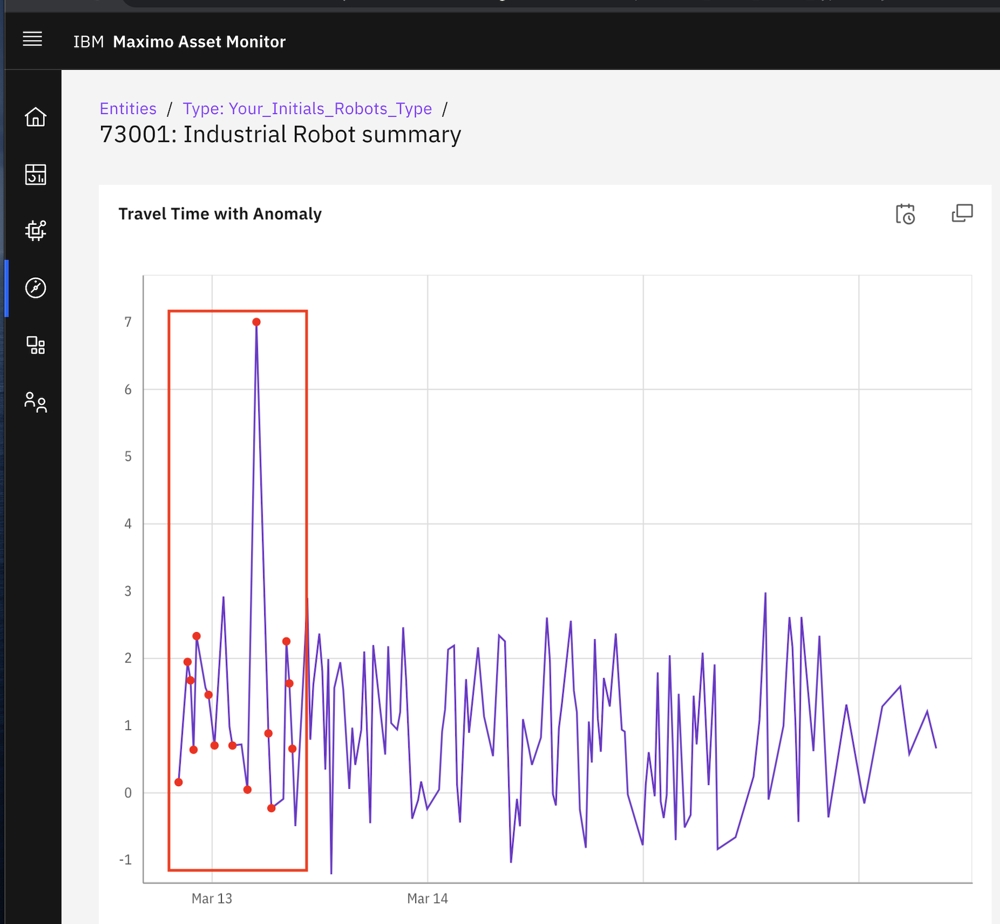
Add Alerts Table Card
Add Alert Table Card using the UI widget
- From the side menu, click
Monitor - Search for
Your_Initialsand click on the asset type you created. - Click on
robot_daily_summarytab - Click on
gear icontop right. Choose Edit dashboards - Click on
Alert table - Title: Robot alerts from the last 24 hours
- Time range:
Last 24 hours - Click
Add card - Save and Close
- You should now have the table in your summary dashboard showing the following Anomaly detection functions scoring.
Add Alert Table Card using JSON
In the previous exercise you visually represented the anomaly alerts as red points on the line chart. It's helpful to also see alerts organized in a table so that you can easily prioritize and act on them.
- Add a table card that displays the
travel_time_anomaly_alertsby robots for the last 24 hours. Add the following card to your instance dashboard template json.
{
"id": "travel_time_anomaly_alerts",
"size": "XLARGE",
"title": "Robot alerts from the last 24 hours",
"type": "ALERT",
"dataSource": {
"range": {
"count": -24,
"interval": "hour"
},
"timeGrain": "input",
"type": "alert"
}
},
-
You should now have the table in your summary dashboard showing the following Anomaly detection functions scoring. 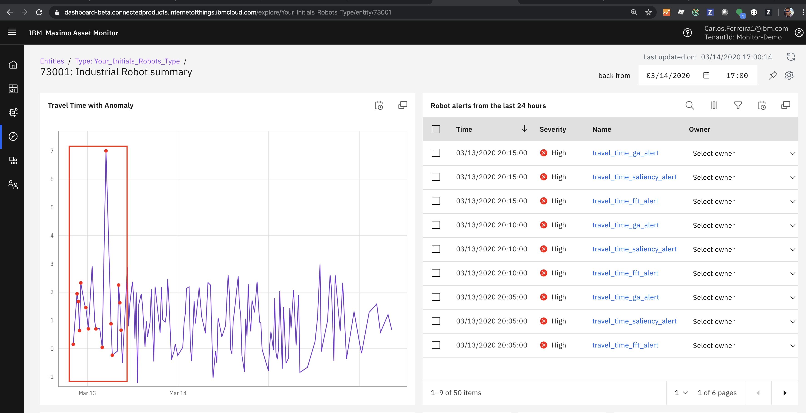
-
From the calendar control in the top right of the dashboard pick an earlier date to see the historical alerts for the robots on a specific date.

Congratulations you have successfully create an asset dashboard and a summary dashboard that aggregates asset performance metrics across multiple assets. You also learned how to detect anomalies by applying anomaly detection functions and alerts at scale across all your enterprise assets.